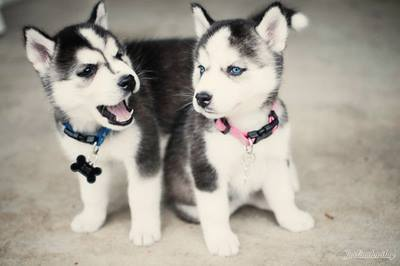

Cats
British Blue
Британската късокосместа котка е порода домашна котка произхождаща от Великобритания. Мъжките екземпляри тежат от 5-10 кг, а женските 5-7 кг. Има къса гъста козина и също така гъст подкосъм.
|
Dogs
Huskey

Сибирското хъски е порода куче, която произлиза от източната част на Сибир. Сибирските хъскита са първоначално селектирани от чукчите в североизточна Азия,
по-късно внесени от търговци в Аляска, САЩ и Канада.
|
Russian Blue
 Руската синя котка е късокосместа порода домашна котка, произхождаща от Русия, близо до град Архангелск. [1] В Англия, където е и призната, е донесена около 1960 от архангелски моряци.
Руската синя котка е късокосместа порода домашна котка, произхождаща от Русия, близо до град Архангелск. [1] В Англия, където е и призната, е донесена около 1960 от архангелски моряци.
Source
- Alderton, David. The Eyewitness Handbook of Cats. Dorling Kindersley, 1992. ISBN 1-56458-070-9. с. p. 182.
|